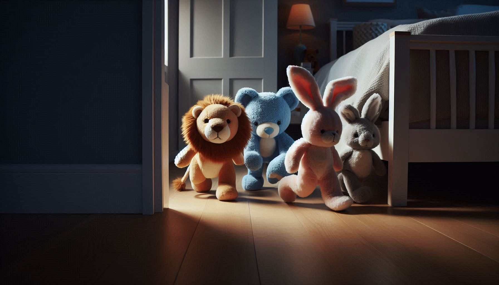
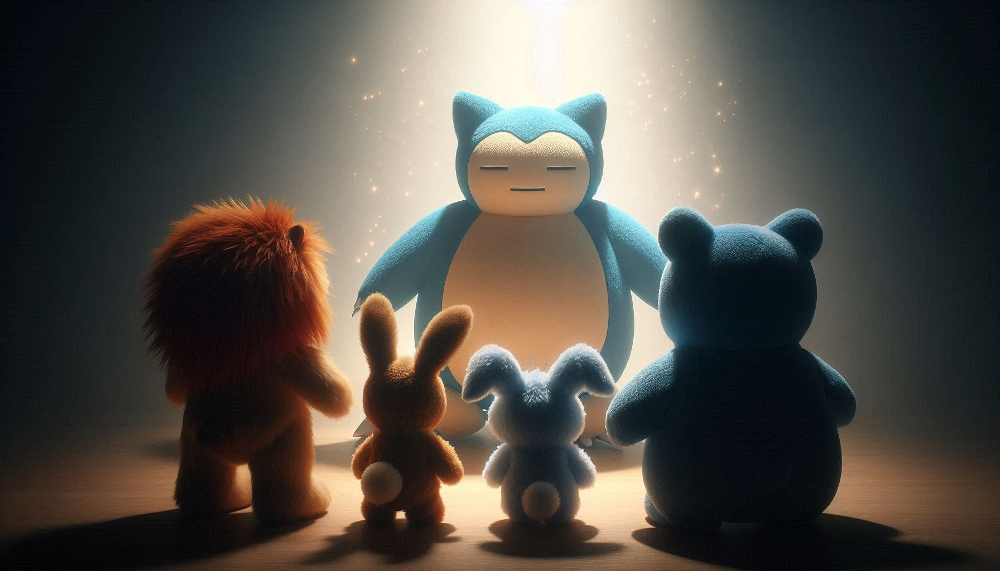
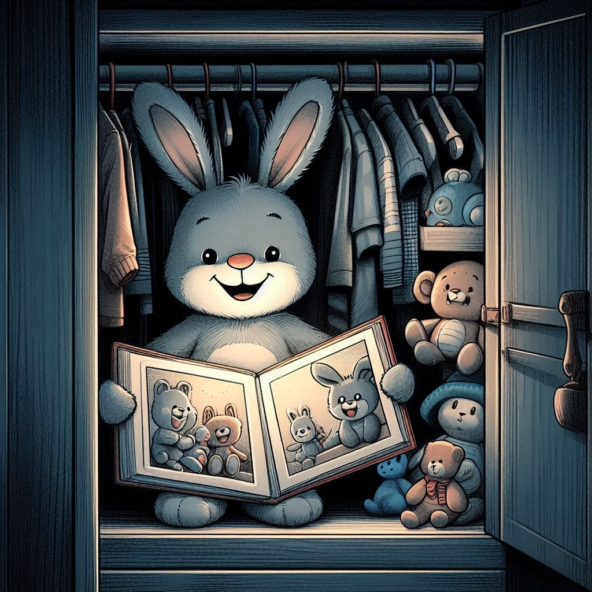

Todos los contenidos utilizados durante el semestre
Aquí están todos los contenidos que fueron utilizados para el desarrollo de este proyecto a través de todo el semestre.
Videos
Teaser de Plush World
Teaser de Quest For The Magic Feast
Imágenes


